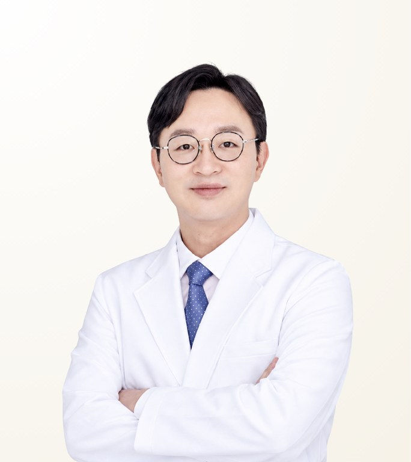

Reviewed by STMSTYLE
Choung Han-Wool
จอง ฮันอุล · 정한울
Seoul Face 21 Dental Hospital · Board-certified Oral & Maxillofacial Surgeon
- 3D Orthognathic Surgery
- Facial Contouring
- Revision Orthognathic and Contouring Surgery
- Experience
- Licensed dentist since 2007; board-certified oral & maxillofacial surgeon since 2011
- Clinical experience
- 1,000+ orthognathic surgeries since the opening of Seoul Face 21
- Recommended Stay
- Arrive 7 days before surgery for examination and consultation, with 3 days of hospitalisation. Then either (1) stay 2 weeks after surgery, return home and revisit in week 5, or (2) stay about 4 weeks for follow-up before returning home.
About the Doctor
Dr. Choung Han-Wool is a board-certified oral and maxillofacial surgeon at Seoul Face 21 Dental Hospital in Seoul, known for 3D analysis-based orthognathic (double-jaw) surgery and three-dimensional correction of facial asymmetry. A Seoul National University graduate with a PhD in Dental Science, he has performed more than 1,000 orthognathic surgeries since Seoul Face 21 opened. He also treats complex revision jaw and facial contouring cases.
Case Expertise
3D Orthognathic Surgery
Using three-dimensional CT data, occlusion, jaw position and facial proportion are designed together before both jaws are moved in one operation. The osteotomy is matched to the patient's skeleton — High Le Fort I or subspinal osteotomy for the maxilla, SLOM or IVSRO for the mandible.
Facial Contouring
Zygoma reduction, mandible angle reduction and genioplasty are performed alone or in combination according to the patient's bone structure, with the final soft-tissue position calculated alongside the bone.
Revision Orthognathic and Contouring Surgery
Corrects asymmetry, bone-union problems or unwanted facial change after previous surgery. Existing fixation material and bone condition are assessed first, with reconstruction using autogenous bone or bone-regeneration composite where needed.
Other treatments available
Materials & Equipment
Video
Philosophy of Care
Occlusion, jaw position, asymmetry and facial proportion are diagnosed precisely through 3D analysis, combining functional improvement with the slimmer, more refined look the patient wants. Safety and thorough explanation come first so that patients can undergo treatment without fear, and each plan aims for a stable, satisfying result with the least possible burden.
— Choung Han-Wool
Peer Recommendation
I recommend him for his extensive clinical experience and expertise in orthognathic and facial contouring surgery, his judgement and surgical capability in complex, high-difficulty cases, and the stable results he achieves by taking each patient's characteristics into account.
Dr. Hwang Hye-Won · Board-certified Orthodontist · Full member, Korean Association of Orthodontists · WFO member
STMSTYLE Assessment
STMSTYLE has collaborated with Dr. Choung Han-Wool and Seoul Face 21 over the long term, including in-person consultations and on-site observation. STMSTYLE considers him particularly well suited to patients with bite problems or facial asymmetry who want both functional and aesthetic correction, as well as complex revision cases. He performs surgery personally, supported by hospital-level safety systems, specialist collaboration and structured aftercare.
STMSTYLECareer & Training
View full background
Education
- DDS, Seoul National University School of Dentistry
- MSc and PhD in Dental Science, Graduate School of Seoul National University
Licences & certification
- Korean dental licence 2007
- Board certification in Oral & Maxillofacial Surgery 2011
- Certified Fellow and Instructor, Korean Association of Maxillofacial Plastic and Reconstructive Surgeons
Career
- Internship and Residency in Oral & Maxillofacial Surgery, Seoul National University Dental Hospital
- Former Clinical Fellow and Clinical Instructor, Clinical Trial Centre and Department of Oral & Maxillofacial Surgery, Seoul National University Dental Hospital
- Former Clinical Assistant Professor, Department of Oral & Maxillofacial Surgery, Chung-Ang University Hospital
- Adjunct Faculty, Seoul National University School of Dentistry
- Operating surgeon, Seoul Face 21 Dental Hospital
Professional memberships
- Public Relations and Planning Director, Korean Association of Oral and Maxillofacial Surgeons (practitioners' association and academic society)
- Full member, Korean Association of Maxillofacial Plastic and Reconstructive Surgeons
- Legislation and Planning Director, Korean Association of Orthognathic Surgery
- Full member, Korean Academy of Oral and Maxillofacial Implantology
- Full member, Korean Cleft Palate-Craniofacial Association
Frequently Asked Questions
Is Dr. Choung Han-Wool experienced in double-jaw surgery?
Yes. Dr. Choung Han-Wool is a board-certified oral and maxillofacial surgeon who has performed more than 1,000 orthognathic surgeries since Seoul Face 21 opened. He plans each operation with 3D CT analysis, designing occlusion, jaw position and facial proportion together.
Does Dr. Choung Han-Wool perform revision jaw or contouring surgery?
Yes. Dr. Choung Han-Wool performs revision orthognathic and contouring surgery, including correction of asymmetry, bone-union problems and reconstruction. He reviews existing fixation material and bone condition before planning. Suitability is confirmed at an in-person consultation.
How long should I stay in Korea for jaw surgery with Dr. Choung Han-Wool?
For jaw surgery with Dr. Choung Han-Wool, plan to arrive 7 days before surgery for tests and consultation, followed by 3 days in hospital. You can then stay 2 weeks and return for a check-up in week 5, or stay about 4 weeks continuously before flying home.
What materials does Dr. Choung Han-Wool use?
Dr. Choung Han-Wool uses autogenous bone, titanium, PEEK and a PCL+β-TCP bone-regeneration composite. The choice depends on each patient's bone condition and procedure.
Does Dr. Choung Han-Wool operate personally, and can I consult through STMSTYLE?
Yes, Dr. Choung Han-Wool performs the surgery personally. Patients can start a consultation through STMSTYLE in Bangkok via LINE or WhatsApp, and STMSTYLE confirms schedules and conditions with the hospital. The final plan and cost are set after an in-person consultation.
Sources
View sources and review record
| Item | Source | Checked |
|---|---|---|
| Career and treatment information | Seoul Face 21 Dental Hospital official website | 2026-08-28 |
| Licence, board certification, degrees, case numbers and stay schedule | Documents provided by Seoul Face 21 Dental Hospital | 2026-08-28 |
| Professional society roles | Professional society information and hospital official website | 2026-08-20 |
| Doctor introduction video | Official video on YouTube | 2026-08-28 |
| In-person meetings and patient coordination | STMSTYLE direct review through long-term collaboration | 2026-08-28 |
Review record · 2026-08-28
STMSTYLE reviewed Dr. Choung Han-Wool's profile through long-term collaboration, in-person meetings, patient coordination and cross-checking against the hospital's official materials.